Current weather
Use your location to match the nearest Macau observation station, with temperature, humidity, wind, rainfall tendency and official weather summaries.
Macau Weather combines real-time weather, official warning signals, air quality, traffic cameras, water levels, widgets and Live Activities in a clean iOS experience.
Use your location to match the nearest Macau observation station, with temperature, humidity, wind, rainfall tendency and official weather summaries.
Rainstorm, tropical cyclone, thunderstorm, storm surge, strong monsoon and special weather information, with optional push notification categories.
Traffic cameras, water level monitoring, bridge wind, radar, lightning, satellite images and tropical cyclone tracks in one Now page.
Preview the main Now page, official warning status and weather-measure guidance in the app.
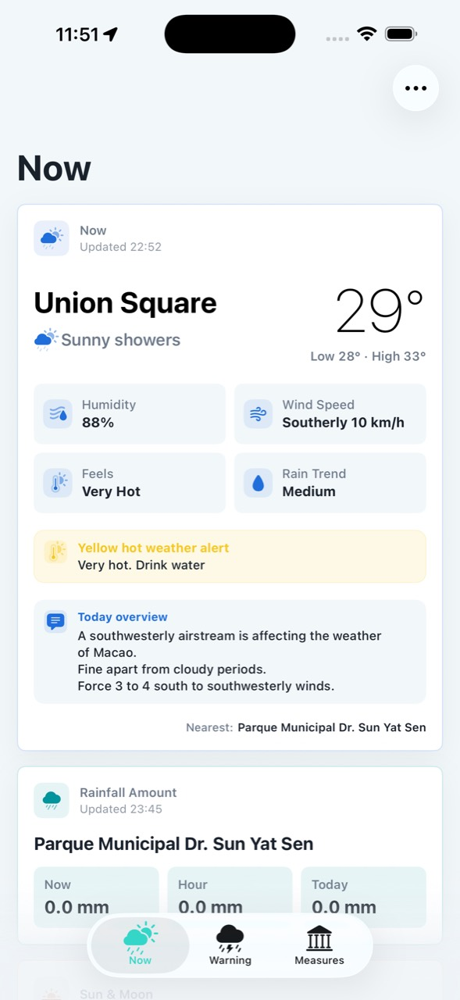
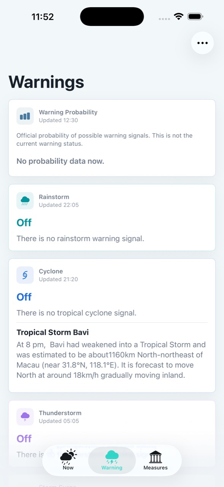
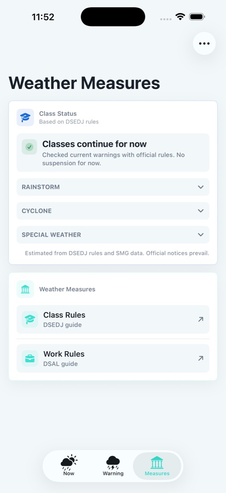
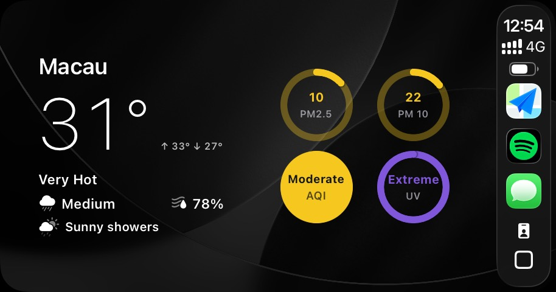
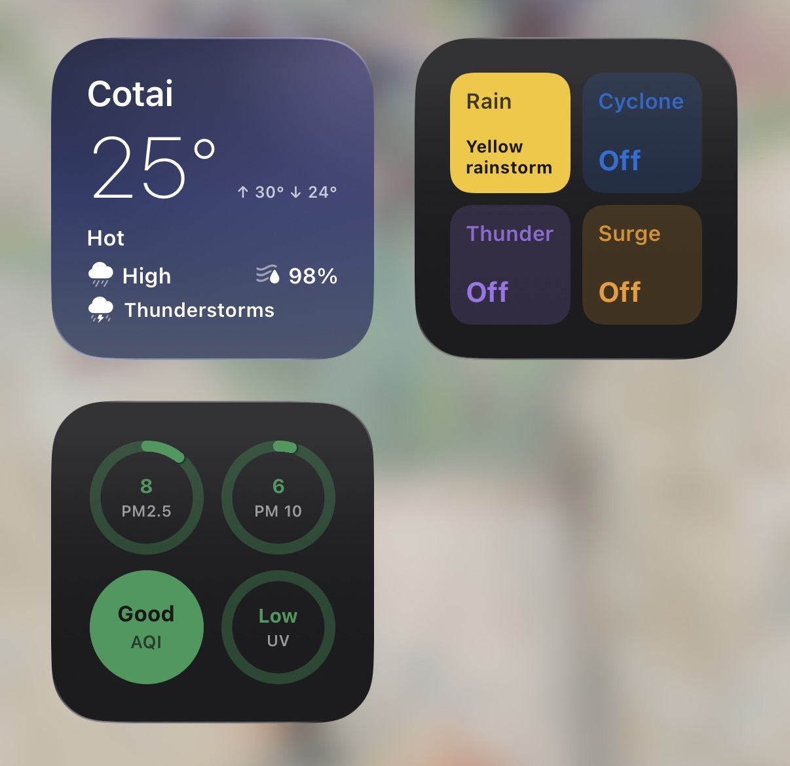
The app keeps the main screen focused on current conditions and lets you customize which Now cards are shown. Warnings and weather measures are separated so urgent information is easier to scan.
Weather data may change quickly. Always follow the latest official announcements and government instructions during severe weather.
澳門天氣整合即時天氣、官方警告信號、空氣質素、交通鏡頭、水位監測、Widget 及 Live Activity，提供清晰簡潔的 iOS 體驗。
使用定位配對最接近的澳門觀測站，顯示氣溫、濕度、風況、降雨傾向及官方天氣概況。
暴雨、熱帶氣旋、雷暴、風暴潮、強烈季候風及特別天氣訊息，並可自訂推送通知類別。
交通鏡頭、水位監測、橋上風況、雷達、閃電、衛星雲圖及熱帶氣旋路徑圖集中於即時頁。
查看即時天氣、風雨警告及惡劣天氣措施三個主要頁面。
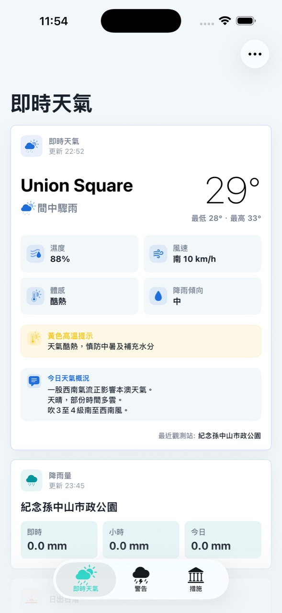
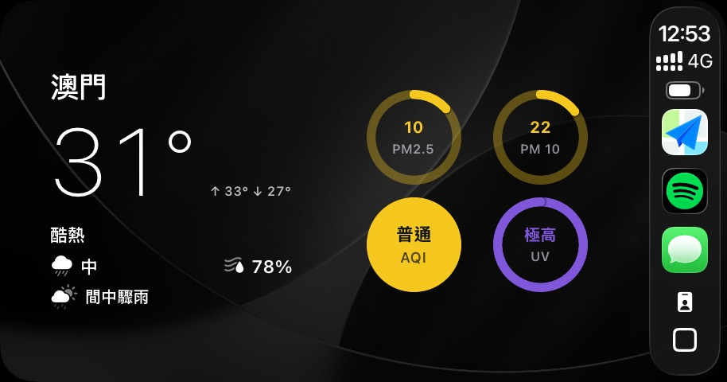
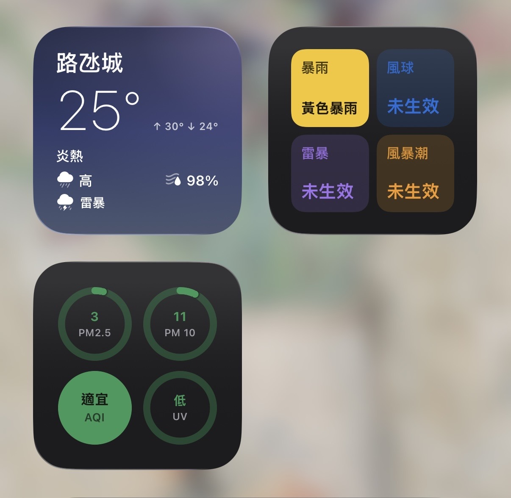
主頁集中顯示現時最需要的資訊，並可自訂顯示哪些即時卡片。警告及惡劣天氣措施分頁處理，方便快速掃讀。
天氣資料可能快速轉變。惡劣天氣期間，請以最新官方公布及政府指引為準。
澳门天气整合即时天气、官方警告信号、空气质量、交通镜头、水位监测、Widget 及 Live Activity，提供清晰简洁的 iOS 体验。
使用定位配对最接近的澳门观测站，显示气温、湿度、风况、降雨倾向及官方天气概况。
暴雨、热带气旋、雷暴、风暴潮、强烈季候风及特别天气信息，并可自定义推送通知类别。
交通镜头、水位监测、桥上风况、雷达、闪电、卫星云图及热带气旋路径图集中于即时页。
查看即时天气、风雨警告及恶劣天气措施三个主要页面。
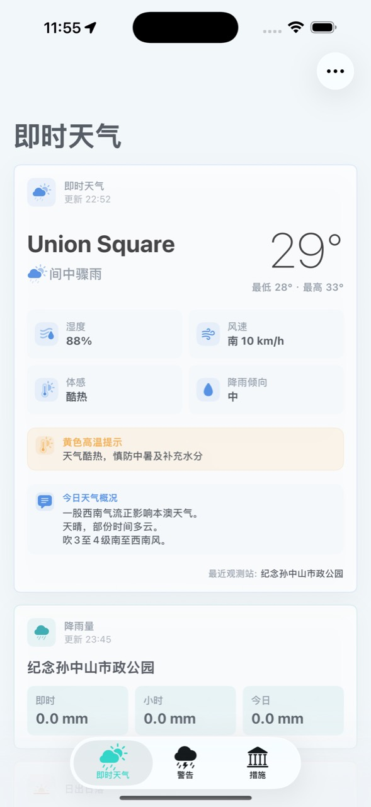
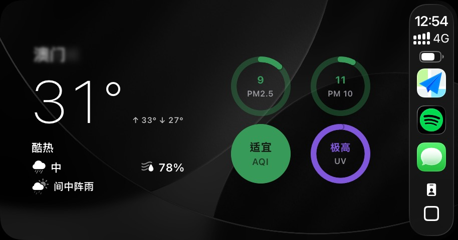
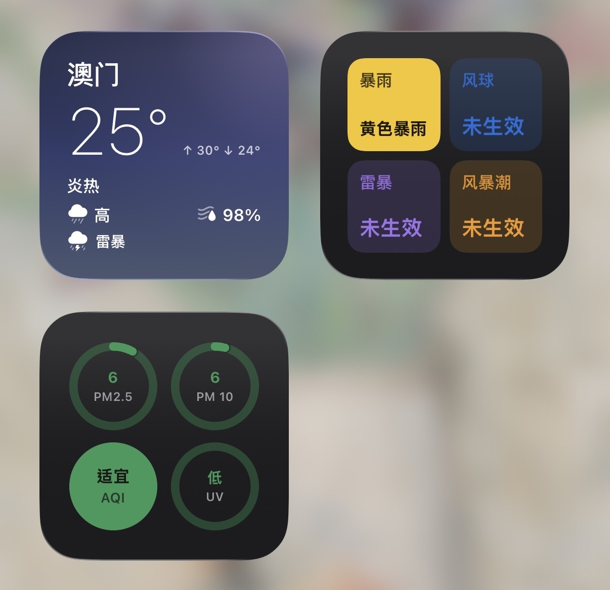
主页集中显示当前最需要的信息，并可自定义显示哪些即时卡片。警告及恶劣天气措施分页处理，方便快速扫读。
天气资料可能快速转变。恶劣天气期间，请以最新官方公布及政府指引为准。
Macau Weather reúne tempo em tempo real, avisos oficiais, qualidade do ar, câmaras de trânsito, nível da água, widgets e Live Activities numa experiência iOS simples e clara.
Usa a localização para encontrar a estação de observação de Macau mais próxima, com temperatura, humidade, vento, tendência de chuva e resumo oficial.
Chuva intensa, ciclone tropical, trovoada, maré de tempestade, monção forte e informações especiais, com categorias opcionais de notificações.
Câmaras de trânsito, nível da água, vento nas pontes, radar, relâmpagos, imagens de satélite e trajetórias de ciclones tropicais na página Agora.
Veja as páginas principais: tempo atual, avisos e medidas de mau tempo.
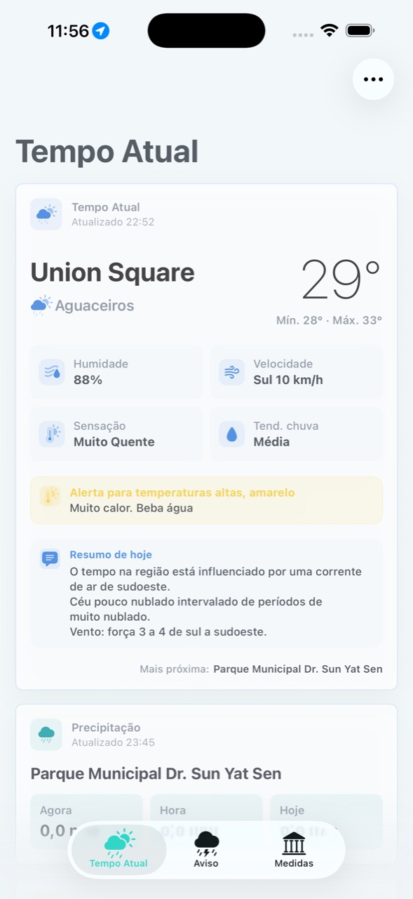
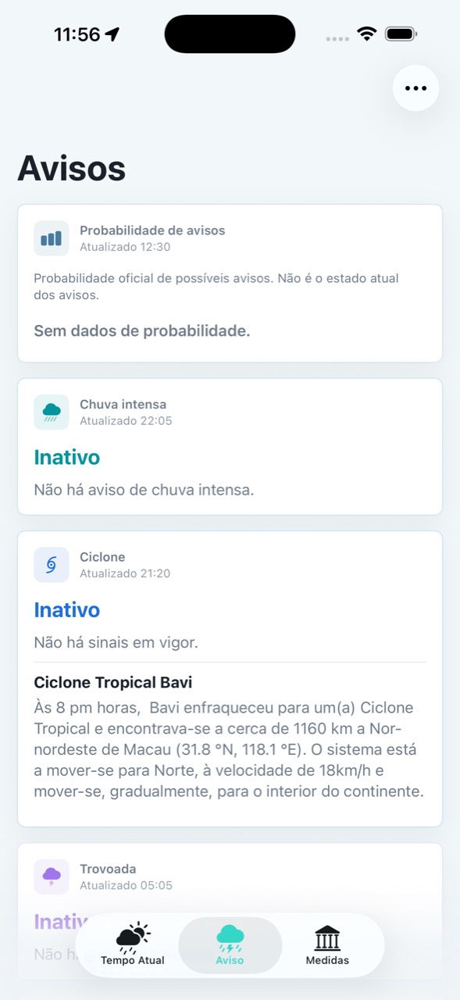
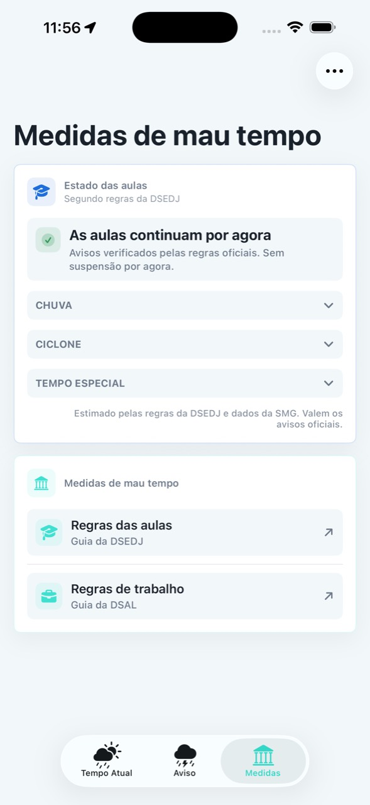
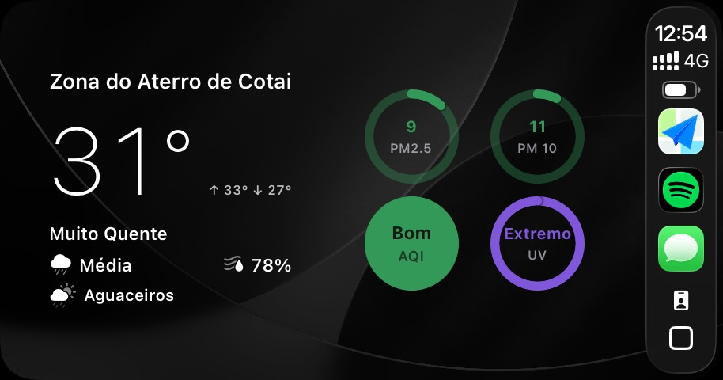
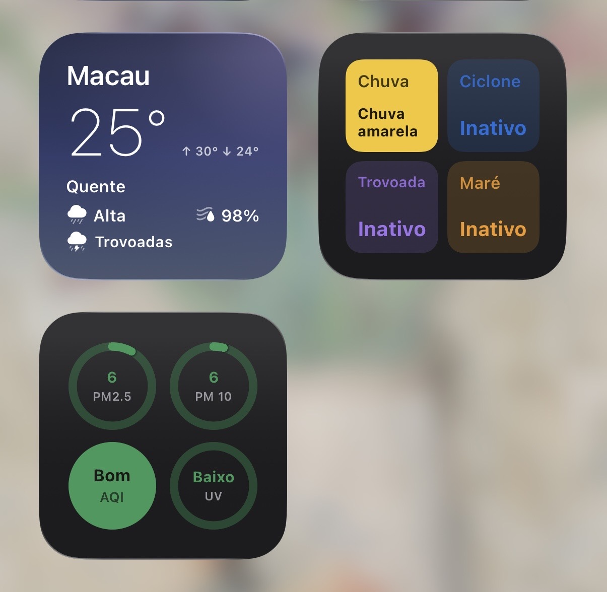
A página principal mostra as informações mais importantes do momento e permite personalizar os cartões. Os avisos e medidas de mau tempo ficam em páginas separadas para leitura rápida.
As condições meteorológicas podem mudar rapidamente. Durante mau tempo, siga sempre os anúncios oficiais e as instruções do governo.